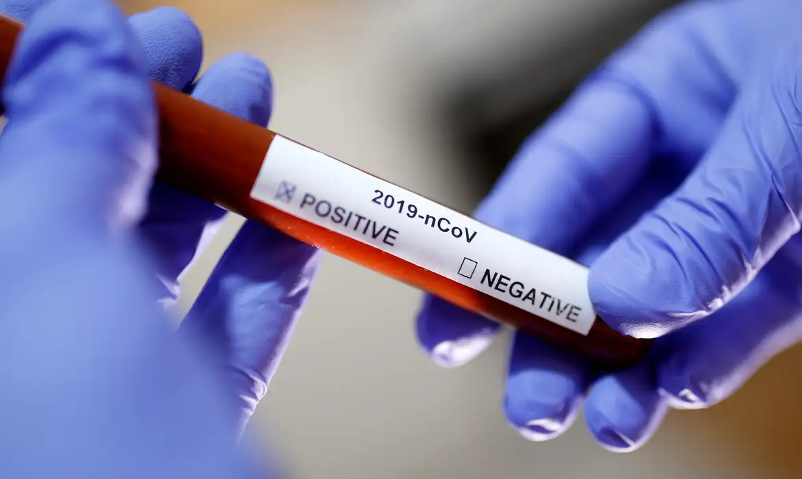

Tecnologia👨💻
Apple se Despede das Telas LCD: Uma Nova Era OLED para o iPhone 16
A Apple, gigante da tecnologia e inovação, está prestes a fazer uma transição significativa em sua linha de produtos. Segundo informações do site Nikkei Asia, a empresa planeja abandonar as telas LCD em favor das telas OLED a partir do iPhone 16. Esta mudança representa um avanço considerável, pois as telas OLED são conhecidas por sua superior qualidade de imagem, cores mais vibrantes e negros mais profundos, além de serem mais finas e eficientes em termos de energia.
A decisão da Apple de encerrar os contratos com as fornecedoras japonesas Japan Display (JDI) e Sharp, que forneciam os painéis LCD, é um indicativo claro da mudança de direção da empresa em relação à tecnologia de exibição. A escolha pelas telas OLED não é apenas uma questão de qualidade de imagem, mas também reflete o compromisso da Apple com a inovação e a melhoria contínua de seus produtos.
Com a implementação do OLED, que começou em 2017 nos modelos mais avançados, a Apple agora estende essa tecnologia a todos os quatro modelos da geração iPhone 16. As empresas BOE da China, Samsung Display e LG Display da Coreia do Sul foram escolhidas como as novas fornecedoras, o que sugere uma expansão na capacidade de produção e possivelmente uma redução nos custos de fabricação a longo prazo.
A conferência de lançamento do iPhone 16 está marcada para o dia 9 de setembro, e espera-se que, além dos novos smartphones com tela OLED, a Apple apresente novos recursos de inteligência artificial (IA), o Apple Watch Series 10 e os fones de ouvido sem fio AirPods 4. O evento será transmitido ao vivo no site oficial da Apple e em seu canal no YouTube, prometendo ser um marco na história da empresa.
Este movimento da Apple pode ter um impacto significativo no mercado de smartphones, influenciando outras empresas a seguir o mesmo caminho e adotar a tecnologia OLED em seus produtos. Além disso, a mudança para OLED pode abrir portas para novas inovações, como dispositivos dobráveis e outras aplicações futuristas.
Apple está definindo o futuro da tecnologia de telas em smartphones com sua transição para OLED no iPhone 16. Este é um passo ousado que destaca a liderança da empresa no mercado e seu compromisso com a entrega de produtos de alta qualidade e tecnologicamente avançados para seus consumidores. A expectativa é grande para o evento de lançamento e para as novidades que a Apple trará para o ecossistema de dispositivos móveis.
Bolsa de valores📈
Uma leve alta no mercado financeiro IBOVESPA
O mercado financeiro brasileiro apresentou movimentações significativas nesta semana, influenciado por uma série de dados econômicos provenientes dos Estados Unidos. A Bolsa de Valores de São Paulo (Bovespa) registrou oscilações, enquanto o dólar teve uma queda em relação ao real, refletindo as expectativas dos investidores sobre as futuras decisões de política monetária do Federal Reserve (Fed), o banco central americano.
A Bovespa abriu a quinta-feira (5) com uma leve baixa de 0,09%, atingindo 135.985 pontos, após a divulgação de que o mercado de trabalho nos EUA vem desacelerando. Esse fator pode levar o Fed a considerar um corte mais acentuado nos juros na reunião prevista para o dia 18 de setembro. O dólar comercial iniciou o dia com uma queda de 0,42%, sendo cotado a R$ 5,617, enquanto o dólar turismo era negociado a R$ 5,839.
Os dados do mercado de trabalho americano, fornecidos pela empresa ADP, mostraram que agosto foi o mês mais fraco para o crescimento de empregos nos EUA desde janeiro de 2021, com apenas 99.000 novas vagas, abaixo das expectativas. Além disso, o número de pedidos de seguro desemprego nos EUA caiu na semana encerrada em 31 de agosto, com 227 mil pedidos, um pouco abaixo da previsão de 230 mil solicitações.
Esses indicadores são cruciais pois sinalizam uma possível desaceleração da atividade econômica americana, o que afeta diretamente as decisões de política monetária do Fed. Uma redução nos juros americanos tende a beneficiar mercados emergentes como o Brasil, pois estimula o fluxo de investimentos para países com taxas de retorno potencialmente mais altas.
No cenário interno, a Agência Nacional de Energia Elétrica (Aneel) anunciou uma revisão na bandeira tarifária de setembro, reduzindo a cobrança adicional nas contas de luz, o que deve aliviar a pressão sobre a inflação. A nova tarifa será de R$ 4,463 por quilowatt-hora (KWh), em comparação com os R$ 7,877/KWh previamente anunciados.
Outro fator relevante foi a queda no preço do minério de ferro em Singapura, que atingiu a cotação mais baixa desde 2022, aproximando-se de US$ 90 por tonelada. Isso reflete uma demanda reduzida pelo material, especialmente devido às preocupações contínuas com a economia da China.
O valor do petróleo apresentou alta, com o cartel de nações exportadoras de petróleo, Opep+, próximo de um acordo para adiar o aumento planejado na produção. Essa decisão veio após uma queda no preço do barril para menos de US$ 73 no início da semana, o nível mais baixo desde o final do ano passado.
Esses eventos destacam a interconexão global dos mercados financeiros e a influência de indicadores econômicos externos sobre a economia brasileira. Investidores e analistas permanecem atentos aos próximos movimentos do Fed e aos desenvolvimentos econômicos internacionais, que continuarão a moldar as tendências do mercado no Brasil.
Astronomia🌌
Setembro Celestial: Eclipse Lunar Parcial e o Brilho do Cometa do Século
Para os amantes em astronomia...
O céu de setembro reserva espetáculos celestes que prometem encantar entusiastas da astronomia e o público em geral. Segundo informações compiladas de fontes confiáveis, o mês será marcado por um eclipse lunar parcial, uma Superlua e a passagem do que está sendo chamado de "cometa do século".
No dia 17 de setembro, os observadores poderão testemunhar uma Superlua, fenômeno que ocorre quando a Lua cheia coincide com o perigeu, o ponto mais próximo da Terra em sua órbita, fazendo com que o satélite natural pareça maior e mais brilhante no céu noturno. Na mesma data, ocorrerá um eclipse lunar parcial, onde um segmento da Lua será obscurecido pela sombra da Terra, embora este evento específico seja sutil, afetando apenas 0.08% da superfície lunar.
A última semana de setembro trará a oportunidade de observar a passagem do cometa C/2023 A3 (Tsuchinschan-ATLAS), apelidado de "cometa do século" devido ao seu potencial de brilho intenso. O cometa atingirá sua máxima aproximação do Sol em 27 de setembro, mas espera-se que a melhor visibilidade ocorra em outubro, à medida que se aproxima da Terra.
Além desses eventos principais, o mês também contará com conjunções celestes e a oposição dos planetas Saturno e Netuno ao Sol, proporcionando condições ideais para a observação destes corpos celestes.
Para aqueles interessados em observar tais fenômenos, recomenda-se buscar locais com pouca poluição luminosa, como áreas rurais ou campos abertos. O uso de binóculos pode enriquecer a experiência, permitindo uma visão mais detalhada dos eventos astronômicos.
Este panorama astronômico de setembro não só oferece uma chance de apreciar a beleza do universo, mas também serve como um lembrete da nossa posição no cosmos e da constante dança dos corpos celestes que ocorre independentemente das nossas vidas cotidianas. É um convite para olhar para cima e se maravilhar com os mistérios do espaço que nos cercam.
Alerta Nacional: Fiocruz Reporta Aumento Significativo de Casos de COVID-19 no Brasil
A Fundação Oswaldo Cruz (Fiocruz) emitiu um alerta sobre o aumento de casos de COVID-19 no Brasil, conforme divulgado no Boletim InfoGripe. O estudo, que analisa a Semana Epidemiológica de 25 a 31 de agosto, indica um crescimento nos casos de Síndrome Respiratória Aguda Grave (SRAG) no país. Entre as crianças e adolescentes de até 14 anos, o rinovírus é o principal agente identificado, enquanto nas demais faixas etárias, a COVID-19 prevalece.
Os estados de Goiás e São Paulo são os mais afetados neste momento, com São Paulo apresentando uma preocupação adicional devido ao intenso fluxo de pessoas que podem facilitar a disseminação do vírus para outras regiões. A pesquisadora Tatiana Portella, do Programa de Computação Científica da Fiocruz, enfatiza a importância da vacinação atualizada contra a COVID-19, especialmente para os grupos de risco, e recomenda o isolamento em casa em caso de sintomas, para evitar a transmissão do vírus.
O boletim também destaca que, apesar da tendência de queda nos casos de Vírus Sincicial Respiratório (VSR) e influenza A, o SRAG por rinovírus está em alta, principalmente nos estados do Nordeste, Centro-sul e Norte. Além disso, o VSR e o rinovírus continuam sendo as principais causas de internações e óbitos em crianças de até dois anos.
No contexto do ano epidemiológico de 2024, foram notificados 123.082 casos de SRAG, dos quais 59.410 (48,3%) tiveram resultado laboratorial positivo para algum vírus respiratório. Dentre os casos positivos, a COVID-19 representa 18% dos casos e 50,8% dos óbitos registrados.
A Fiocruz alerta para a necessidade de manter a vacinação em dia e seguir as medidas de prevenção, como o uso de máscaras e o isolamento em caso de sintomas, para controlar a disseminação da COVID-19 e proteger as populações vulneráveis.